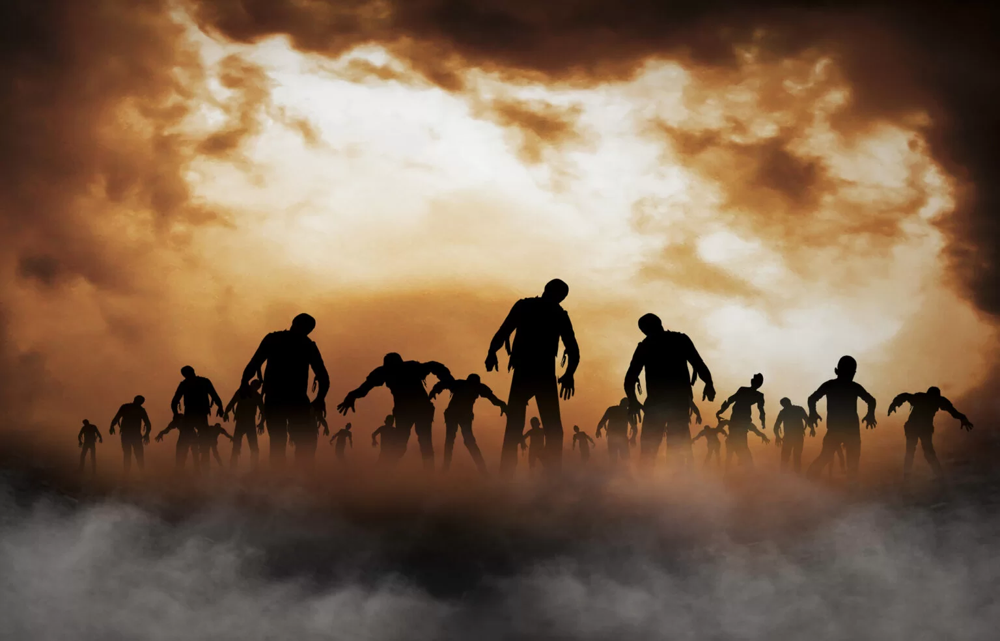

Em um mundo pós-apocalíptico, um virus transforma a maior parte da população em zumbis. Um pequeno grupo liderado por uma ex-militar, lutam para econtrar suprimentos e equipamentos para manter seu refugio seguro enfrentando zumbis e até outros humanos. Seu objetivo é chegar até esse refugio com vida e existem dois caminhos que levam ate la.
você decide ir pelo caminho da floresta por perceber que é mais silencioso e menos chamativo e se fosse pela cidade provavelmente encontraria um grupo de zumbis ou um grupo pequeno de humanos, pela floresta vc encontra um acampamento abandonado.